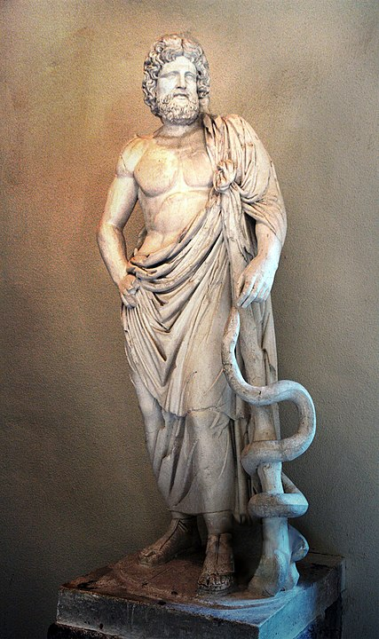

ASCLEPIO O ESCULAPIO
Asclepio fue considerado el Dios de la Medicina. Se crearon templos o sanatorios en Atenas, Corinto y Pérgamo, Tambien en otras partes como en Italia y también en España en Ampurias (Tarragona). Estos templos recibían a los enfermos y en algunos se dormían para sanarse. Los sacerdotes o médicos de estos templos se llamaron “asclepiades” y parece ser que uno de ellos sobresalió y se llamo Asclepio, por lo que pudiera ser que también existieran algún médico que se llamara con este nombre
Estatua de Asclepio que estaba en el templo de Epidauro y actualmente se encuentra en el Museo de Atenas (Grecia)Macaón y Podalirio, que atienden a los heridos griegos en la guerra de Troya, son los dos primeros médicos griegos cuyo nombre conocemos. La Ilíada los recuerda como «dos buenos médicos» en el ejército del rey Agamenón. Son hijos del famoso Asclepio (en latín Esculapio), más tarde venerado como dios de la medicina, y héroes muy apreciados tanto por su valor guerrero como por su servicial saber quirúrgico. El médico, llamado iatrós en griego, es, en efecto, según Homero, «un hombre que vale por muchos» (Ilíada, XI, 514), y está calificado socialmente como demioergós, «servidor público», al igual que el adivino, el maestro carpintero o el recitador de poemas. Se trata de un oficio acreditado y sabemos que médicos itinerantes circulaban por la Grecia arcaica.